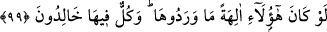
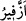

99. Eğer onlar birer ilah olsalardı oraya (cehenneme) girmezlerdi. Halbuki hepsi
(tapanlar da tapılanlar da) orada ebedî kalacaklardır.
“Eğer onlar” o putlar onların iddiâ ettikleri gibi gerçek “birer ilah olsalardı oraya
(cehenneme) girmezlerdi.” Şu halde onların cehenneme girmeleri, ilah olmalarının
imkansızlığını ortaya koyar. “Halbuki hepsi” tapanlar da tapılanlar da “orada ebedî
kalacaklardır.” Onlara, oradan kurtuluş yoktur.
100. Orada onlara inim inim inlemek düşer. Yine onlar orada (hiçbir iyi haber)
duymazlar.
“Orada onlara inim inim inlemek düşer.” “__WORD__ göğüs kafesi şişecek kadar nefes
alıp vermektir. Yâni onlar için inleme ve şiddetli soluma vardır. Esâsen şiddetle nefes
alıp vermek kullara âit fiiller olduğu halde burada tamamına şâmil kılmak üzere hepsine
izâfe edilmiştir.
“Yine onlar orada” kapıldıkları dehşetli korkudan ve azabın şiddetinden ötürü
birbirlerinin inlemesini “duymazlar.”
İbn Mes‘ûd (r.a.)’ın şöyle dediği rivâyet edilmiştir: “Cehennem ehli orada ateşten
tabutların içine konulurlar. Sonra bu tabutlar başka tabutların içine, onlar başka
tabutların içine, onlar da başka tabutların içine konulur. Tabutların üzerinde ateşten
çiviler vardır. Onlar hiçbir şey işitmezler. Onlardan hiçbiri, orada kendisinden
başkasına azab olunduğunu görmez.”
Sonra Allah, bu kimselerin zıddı olanların durumlarını açıklamış ve şöyle
buyurmuştur:
101. Tarafımızdan kendilerine güzel âkıbet takdir edilmiş olanlara gelince, işte
bunlar cehennemden uzak tutulurlar.
“Tarafımızdan kendilerine” hasletlerin en güzeli olan “güzel âkıbet” yâni saâdet
“takdir edilmiş olanlara gelince,” bu kimseler, îman ve sâlih amel sâhibi bütün
mü’minlerdir. Ya da onlar, ezelde kendilerine tâat üzere olacaklarına, sevâba nâil